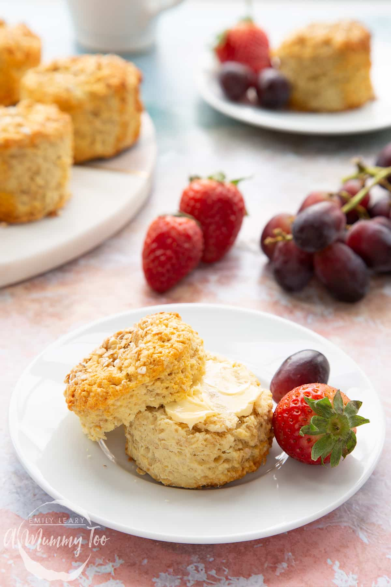

Oatmeal Scones

I haven't made this recipe yet, or any oatmeal scones. I plan to try it out, and I'll switch out the picture with one of my own.
Ingredients
- 5 cup flour
- 4 tsp baking powder
- 2 tsp baking soda
- 1 tsp salt
- 1 cup sugar
- 1 lb butter
- 1/2 cup currants, or other dried fruit
- 1/4 cup Madeira or OJ
- 1 1/3 cup oats
- 1 cup buttermilk or yogurt
- 2 eggs
Steps
- Preheat oven to 350 F.
- Mix dry ingredients up to butter.
- Cut in butter.
- Mix buttermilk and eggs.
- Add oatmeal and raisins last.
- Mix together and chill in fridge.
- Roll into disk and but into pizza sliced shapes.
- Don't overmix to keep it flaky.
- Add to oven for 20-30 minutes.